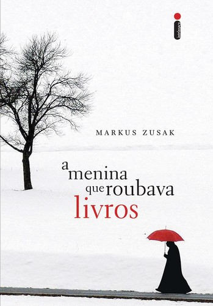
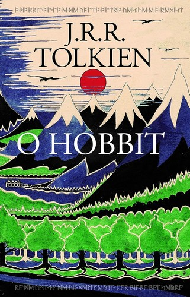
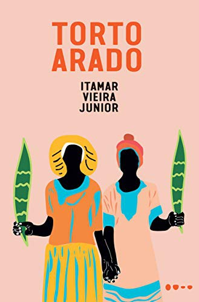

Sábado · 19h · Online
A Menina que Roubava Livros
Palavras que salvam: o que um livro pode fazer por alguém.
Ninguém precisa ler sozinho. Puxe uma cadeira, a conversa já vai começar.
O Clube do Leitor é o salão da nossa biblioteca: um espaço para quem gosta de terminar um livro e ter com quem conversar sobre ele. Todo mês escolhemos uma leitura, cada pessoa lê no seu ritmo e, no fim, nos encontramos online para trocar impressões, dúvidas e trechos favoritos.
Não há prova, não há pressa e não existe opinião errada. Basta vontade de ler e de ouvir.

Markus Zusak
Porque é um livro sobre o poder das palavras, narrado pela Morte, que encontra beleza onde menos se espera. Para fechar o ano, nada melhor que uma história sobre ler, guardar e dividir livros com quem precisa deles.
Três alas da biblioteca disputam o próximo encontro. Quem vence descansa por três rodadas, para o Clube passear por todo o acervo.
Modo demonstração: o site é estático, então o voto fica salvo só neste navegador. Encerre a rodada para ver a ala vencedora entrar em descanso e uma nova votação começar.
Sempre aos sábados, às 19h, online.
Sábado · 19h · Online
Palavras que salvam: o que um livro pode fazer por alguém.
Sábado · 19h · Online
O livro vencedor da votação aberta será lido para este encontro.
Sábado · 19h · Online
Três novas alas entram na disputa assim que a rodada anterior terminar.
Escolha entre as três alas da rodada; o livro vencedor é o do próximo encontro.
Sem metas de páginas: cada um lê do seu jeito.
No sábado combinado, acesse a sala online pelo link enviado por e-mail.
Conte o que sentiu, leia um trecho, ouça os outros leitores e deixe sua resenha no acervo.

J. R. R. Tolkien
“Para mim, é o livro perfeito para voltar a gostar de ler: uma aventura simples, cheia de humor, que cabe num fim de semana e fica na memória por anos.”
Ludmilla
Equipe Marca-Página

Itamar Vieira Junior
“Um romance brasileiro forte e bonito, que me fez enxergar o sertão de outro jeito. Leia devagar e preste atenção nas vozes das duas irmãs.”
Danillo
Equipe Marca-Página
Mande uma carta dizendo que quer participar e enviamos o convite do próximo encontro.
Quero participar